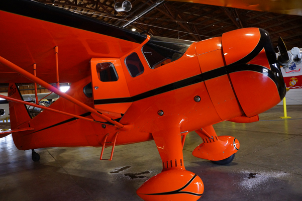

Howard DGA 11

The Howard DGA (Damn Good Airplane)-11 was the commercial version of the famous 1935 Bendix and Thompson Cup winning DGA-6 “Mr. Mulligan” racing aircraft. The Howard was custom-built and designed jointly by Benny Howard and Gordon Israel. It was reportedly the fastest four-place personal airplane on the market. The standard price for the DGA-11 would have been around $16,500. It was among the most costly aircraft to build and was often owned by the rich or movie stars.
The Howard at the Arkansas Air and Military Museum is one of only five restored aircraft of this model left today.